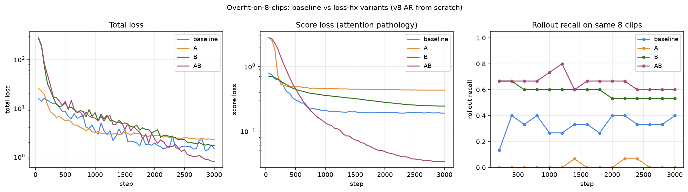

Diagnostic doc — 2026-09-02. We can't overfit v8's AR model on 8 sim clips: after 3000 steps, loss doesn't reach zero and rollout recall on the training set is only 0.27. This page steps through each loss term, shows an interactive demo of the pathology, and surveys literature alternatives.
The model is an autoregressive knot generator on a 128×128 canvas. It produces:
Training uses three losses:
total = 5 * coord_loss + 5 * score_loss + 1 * knot_loss
score_loss — attachment confidence ← main pathologyscore_loss = BCE( sigmoid(score), exp(-d² / σ²) ), averaged over all 1536 slots
where d = distance from slot's predicted (y,x) to nearest GT attachment
σ = 12 px (on 128-canvas)
The BCE target is a Gaussian bump: 1 at a GT attachment, decaying to 0
at ~24 px away. On a 128×128 canvas with 1-3 GT flagella per clip, most
slots have target ≈ 0 because their predicted position lands
in empty space.
The problem: with 1536 slots all averaged equally, the sea of near-zero targets swamps the few positive ones. The model quickly learns "output low logit everywhere" and BCE parks at ~0.2 — you can see the flat green line in the overfit run.
Click on the canvas to place GT attachments. The heatmap shows
exp(-d²/σ²). Adjust σ and mask radius.
| loss | start | end (3000 steps) |
|---|---|---|
| total | 1.75 | 1.14 |
| coord | 0.15 | 0.03 ✓ |
| score | 0.196 | 0.196 (stuck) |
| knot | 0.03 | 0.012 ✓ |
Rollout recall on the same 8 clips: 0.13 → 0.27. Cannot memorize the training data.
| variant | score-mode | coord-mode | end score-loss | end recall |
|---|---|---|---|---|
| baseline | wide-gauss | min-over-all | 0.190 stuck | 0.40 |
| A | hard-mask | min-over-all | 0.431 | 0.00 (broken) |
| B | wide-gauss | per-cell-in-radius | 0.244 | 0.53 |
| AB | hard-mask | per-cell-in-radius | 0.034 (6×) | 0.60 |

Score-loss values aren't directly comparable across score-modes (different normalizers), but the relative trend is clear: AB unsticks the plateau (0.190 → 0.034) and produces the best recall. Note variant A alone (hard-mask score, unchanged coord) is unstable — without dense coord supervision, the score head learns which cells should be positive but the coord head still fits only one cell, so at inference the attach positions are ambiguous and recall collapses to 0. Both fixes are needed together.
Recall still 0.60, not 1.0. Even with both attach-side losses fixed, we still can't memorize 8 training clips. This tells us the next bottleneck is the AR rollout itself — the teacher-forced knot loss doesn't guarantee that sampled rollouts stay on GT (see §4, exposure bias).
coord_loss — attachment regression ← weak gradientcoord_loss = mean over GT of ( min-over-all-slots of || pred_pos - gt_att || )
Only one slot per GT gets a coord gradient — whichever happens to be closest. All other 1535 slots receive no coord signal.
Combined with the score problem, this is why we see coord=0.03
(the winning slot fits great) but recall=0.27 (the score head has no idea
which of the 1536 slots is the winning one, so at inference we pick top-scored
slots that happen not to be GT-close).
Which slots get a coord gradient (green dot)? Compare min-over-all vs per-cell-in-radius.
knot_loss — AR teacher-forced categoricalknot_loss = mean_k [ CE(angle_logits[k], gt_angle_bin[k])
+ CE(step_logits[k], gt_step_bin[k]) ]
Standard AR CE. Fits fine (0.012 after overfit). But it's teacher-forced — at each step the patch is centred on the ground-truth knot, not on the model's own prediction. This is the "exposure bias" problem of AR sequence models: at inference the model diverges from GT after a few knots, and none of the training loss sees this compounding error.
Recall is not "any predicted point close to GT" — it's symmetric Chamfer, averaged in both directions:
Chamfer(pred, gt) = 0.5 * ( mean_over_pred_pts( min_dist_to_any_gt_pt )
+ mean_over_gt_pts ( min_dist_to_any_pred_pt ) )
A rollout is close to a GT only when both:
Recall per clip:
Reference: sim2real/eval_v2/coverage.py::_chamfer_polylines.
| threshold (px) | Chamfer | ordered_L2 | Hausdorff |
|---|---|---|---|
| 4 | 0.856 | 0.221 | 0.058 |
| 6 (default) | 0.990 | 0.673 | 0.240 |
| 8 | 1.000 | 0.875 | 0.519 |
| 12 | 1.000 | 1.000 | 0.856 |
Under the strict ordered-knot L2 (resample both to K=25 knots, match knot-i to knot-i, min over reverse) — the champion's actual recall is 0.673, not 0.99. The Chamfer number was inflated by the very snaking / partial-match failure mode we suspected. Ordered_L2 forces a knot-to-knot correspondence so a rollout that overlaps GT in the middle but misaligns at endpoints gets full penalty.
Under symmetric Hausdorff (max of directed max-of-mins) the strictest number: 0.24 @ 6 px. Only ~24% of GTs have a rollout where every predicted point is within 6 px of some GT point AND vice versa.
Chamfer's percentiles: p50=2.5, p99=5.8. ordered_L2: p50=5.1, p99=10.7.
Real alignment error is ~2× the Chamfer number. Reference:
sim2real/eval_v2/ordered_metric.py.
Length-mismatch penalty. The model always emits exactly 25 knots of step-length 0.75–4.25 px, so all rollouts are 18–102 px long. But 30% of real GT flagella are shorter than 18 px. A too-long rollout that mostly traces a short GT still incurs a large pred→gt term because the extra knots hang out in empty space. That's the mechanism by which the metric penalizes our no-STOP-token model on short flagella.
loss → recall gapEven if all 3 losses fit perfectly, the sampled rollout might still miss GT because:
Adding knot_label_smoothing = 0.1 to the AB recipe closes the overfit gap: recall reaches 1.000 at step 500 and hits 1.0 six more times across 10k steps (interleaved with 0.87–0.93 dips).
step recall 500 1.000 1000 0.867 1500 0.933 2000 1.000 ... peak hit 6 times across 10k steps
The categorical stops collapsing to a delta, so under self-context at inference the softmax has enough width that a small feature-map shift doesn't reroute the argmax to a wrong bin.
| run | changes vs prior | fast pre_recall (peak) | wide-TTA (peak) |
|---|---|---|---|
| v8 (champion, 24 knots) | original AR + attach + wide-gauss score + min-over-all coord | step 60k → 0.990 | 1.000 (60k) |
| v13 | + hard-mask score + per-cell-in-radius coord + LS 0.1 | step 5k → 0.846 (peak much earlier) | 0.971 (5k) |
| v14 | + SS from step 0, p_tf 1.0→0.5 over 20k | step 5k → 0.769 | — |
| v15 | SS delayed until step 20k (killed early) | — | — |
| v16 (training now) | + 12 knots + stop head + smoothness prior; larger patches (24) | pending | pending |
Scheduled sampling was expected to fix exposure bias by mixing self-context into training. In practice v14 peaked lower than v13 (0.77 vs 0.85 at step 5k). Hypothesis: SS active from step 0 hurts the initial categorical formation. v15 delayed SS to step 20k but was killed for v16 before it completed.
Three simultaneous changes attacking three separate failure modes:
k_real = ceil(arc_length / target_step_px), clipped to
[1, 12].k_real+1 uniform-arc points,
pad to 13 with the last point.valid_mask = arange(K) < k_real
so padded knots don't wash out the signal.stop_target[k_real-1] = 1, else 0. Rollout
terminates at the first knot where sigmoid(stop) > 0.5.sm_loss = mean_k [ (E[Δang_k] − E[Δang_{k-1}])² ]
where E[Δang_k] = Σ_i softmax(angle_logits[k])_i · bin_center_i
Encourages the model to make similar predictions at adjacent knots.
Weight 0.3 in v16.The green line stuck at 0.196 in the overfit curve isn't just a hyperparameter tuning issue — the loss surface has a plateau that gradient descent can't leave because the mean over 1536 slots washes out the gradient signal from the ~10 positive slots.